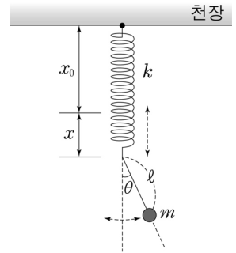
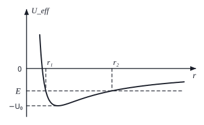
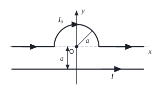
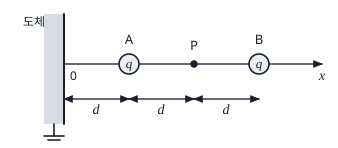

역학·전자기 객관식 4문항 — 라그랑지안·유효 퍼텐셜·비오–사바르·영상 전하Lagrangian of a spring pendulum · effective potential of orbits · Biot–Savart field · image charges and work
그림은 천장에 고정된 용수철상수 \(k\), 길이 \(x_0\)인 용수철의 한 끝에 연결된 길이 \(\ell\)인 실에 질량 \(m\)인 물체가 매달려 같은 연직면상에서 운동하는 것을 나타낸 것이다. 실은 운동하는 동안 팽팽하게 유지된다. \(x\)는 용수철이 늘어난 길이이고, \(\theta\)는 물체를 매단 실과 연직선 사이의 각도이다. 용수철은 연직 방향으로만 움직인다. \(x=0\), \(\theta=\dfrac\pi2\)에서 용수철–진자 계의 퍼텐셜에너지는 0이다.

계의 라그랑지안 \(L\)은? (단, 중력가속도는 \(g\)이고, 물체의 크기, 실의 질량, 용수철의 질량, 공기의 저항 및 모든 마찰은 무시한다.)
그림은 질량 \(M\)인 행성으로부터 중력을 받으며 움직이는 질량 \(m(\ll M)\)인 위성의 유효퍼텐셜 \(U_{\rm eff}\left(=V(r)+\dfrac{L^2}{2mr^2}\right)\)를 행성 중심으로부터 위성 중심까지의 거리 \(r\)에 따라 나타낸 것이다. \(r_1\), \(r_2\)는 타원궤도를 따라 운동하는 위성의 총 에너지가 \(E\)일 때, 각각 행성의 중심으로부터 위성의 중심까지 가장 가까운 거리 및 가장 먼 거리이다. \(V(r)\), \(L\)은 각각 위성의 중력 퍼텐셜에너지와 각운동량의 크기이며, \(-U_0\)은 \(U_{\rm eff}\)의 최솟값이다.

위성의 총 에너지가 \(E\)일 때, 이에 대한 설명으로 옳은 것만을 <보기>에서 있는 대로 고른 것은? (단, \(-U_0\lt E\lt 0\)이다.)
- ㄱ. \(r_1\), \(r_2\)에서 위성의 속력이 각각 \(v_1\), \(v_2\)일 때, \(\dfrac{v_1}{v_2}=\dfrac{r_2}{r_1}\)이다.
- ㄴ. \(r_1\), \(r_2\)에서 위성의 가속도의 크기가 각각 \(a_1\), \(a_2\)일 때, \(\dfrac{a_1}{a_2}=\dfrac{r_1^2}{r_2^2}\)이다.
- ㄷ. \(L\)은 \(\sqrt{-2mEr_1r_2}\)이다.
그림과 같이 반지름 \(a\)인 반원 모양의 도선을 포함한 \(x\)축상의 무한직선 도선에 전류 \(I_0\)이 오른쪽 방향으로 흐르며, \(x\)축으로부터 \(a\)만큼 떨어진 위치에 놓여 \(x\)축과 평행한 무한직선 도선에 전류 \(I\)가 오른쪽 방향으로 흐른다. 두 도선은 \(xy\) 평면상에 고정되어 있고, 반원의 중심은 원점 O이다.

점 O에서 두 도선에 의한 자기장의 세기가 0일 때, 전류 \(I\)는?
그림은 무한히 넓은 접지된 도체 평면으로부터 \(x=d\)인 점 A, \(x=3d\)인 점 B에 각각 같은 점전하 \(q\)가 진공 속에 놓여 있는 것을 나타낸 것이다. B의 전하 \(q\)는 고정되어 있다. 점 P는 도체 평면으로부터 \(x=2d\)인 점이고, \(x\)축은 도체 평면에 수직이다. 점 A, P, B는 \(x\)축상에 있다.

A의 전하 \(q\)를 P까지 이동시키기 위하여 필요한 일은? (단, \(\varepsilon_0\)은 진공의 유전율이다.)
정답문항별 정답 (AI 풀이 ↔ 정답표)
| 문항 | AI 풀이 | 정답표 | 배점 | 판정 | 핵심 아이디어 |
|---|---|---|---|---|---|
| 17 | ⑤ | ⑤ | 2.0 | 일치 ✓ | 수평 속도 \(\ell\dot\theta\cos\theta\), 연직(아래) 속도 \(\dot x-\ell\dot\theta\sin\theta\) → 교차항 \(-m\ell\dot x\dot\theta\sin\theta\). 퍼텐셜은 중력(아래로 내려갈수록 감소)+탄성. |
| 18 | ④ | ④ | 2.5 | 일치 ✓ | ㄱ: \(mv_1r_1=mv_2r_2\). ㄴ: \(a\propto1/r^2\) → \(a_1/a_2=r_2^2/r_1^2\). ㄷ: \(Er^2+GMmr-\tfrac{L^2}{2m}=0\)의 두 근의 곱 \(r_1r_2=-\dfrac{L^2}{2mE}\). |
| 19 | ② | ② | 2.0 | 일치 ✓ | 반원 \(\dfrac{\mu_0I_0}{4a}\)(−z) = 직선 \(\dfrac{\mu_0I}{2\pi a}\)(+z) → \(I=\dfrac\pi2I_0\). |
| 20 | ② | ② | 2.0 | 일치 ✓ | A(x)가 받는 힘 \(F=-kq^2\left[\dfrac{1}{(3d-x)^2}+\dfrac{1}{4x^2}+\dfrac{1}{(x+3d)^2}\right]\) → \(W=-\int_d^{2d}F\,dx=kq^2\left(\dfrac1{2d}+\dfrac1{8d}+\dfrac1{20d}\right)=\dfrac{27kq^2}{40d}\). |
1문항별 풀이 — 선지·보기 분석 포함
17용수철–진자 계의 라그랑지안 2.0점
그림은 천장에 고정된 용수철상수 \(k\), 길이 \(x_0\)인 용수철의 한 끝에 연결된 길이 \(\ell\)인 실에 질량 \(m\)인 물체가 매달려 같은 연직면상에서 운동하는 것을 나타낸 것이다. 실은 운동하는 동안 팽팽하게 유지된다. \(x\)는 용수철이 늘어난 길이이고, \(\theta\)는 물체를 매단 실과 연직선 사이의 각도이다. 용수철은 연직 방향으로만 움직인다. \(x=0\), \(\theta=\dfrac\pi2\)에서 용수철–진자 계의 퍼텐셜에너지는 0이다.
계의 라그랑지안 \(L\)은? (단, 중력가속도는 \(g\)이고, 물체의 크기, 실의 질량, 용수철의 질량, 공기의 저항 및 모든 마찰은 무시한다.)
1운동 에너지
물체 위치: \(X=\ell\sin\theta\), \(Y=x_0+x+\ell\cos\theta\) (아래 +).
\[ \dot X=\ell\dot\theta\cos\theta,\quad \dot Y=\dot x-\ell\dot\theta\sin\theta \Rightarrow T=\tfrac12m(\dot x^2+\ell^2\dot\theta^2-2\ell\dot x\dot\theta\sin\theta) \]2퍼텐셜 에너지
\(V=-mg(x+\ell\cos\theta)+\tfrac12kx^2\) (+상수). \(x=0,\ \theta=\pi/2\)에서 0이 되도록 상수 = 0.
\[ L=T-V=\tfrac12m\dot x^2+\tfrac12m\ell^2\dot\theta^2-m\ell\dot x\dot\theta\sin\theta+mg(x+\ell\cos\theta)-\tfrac12kx^2 \]| 선지·보기 | 해설 |
|---|---|
| ①③ | 교차항을 cos θ로 — 속도 성분 계산 오류 |
| ②④ | 교차항 누락 — 용수철 끝의 운동과 진자 운동을 독립으로 취급 |
| ②③ | 중력 퍼텐셜을 \(\ell\sin\theta\)로 — 연직 높이는 \(\ell\cos\theta\) |
| ⑤ | T의 교차항 \(-m\ell\dot x\dot\theta\sin\theta\), V 기준점 모두 옳음 ✓ |
18유효 퍼텐셜과 타원 궤도 2.5점
그림은 질량 \(M\)인 행성으로부터 중력을 받으며 움직이는 질량 \(m(\ll M)\)인 위성의 유효퍼텐셜 \(U_{\rm eff}\left(=V(r)+\dfrac{L^2}{2mr^2}\right)\)를 행성 중심으로부터 위성 중심까지의 거리 \(r\)에 따라 나타낸 것이다. \(r_1\), \(r_2\)는 타원궤도를 따라 운동하는 위성의 총 에너지가 \(E\)일 때, 각각 행성의 중심으로부터 위성의 중심까지 가장 가까운 거리 및 가장 먼 거리이다. \(V(r)\), \(L\)은 각각 위성의 중력 퍼텐셜에너지와 각운동량의 크기이며, \(-U_0\)은 \(U_{\rm eff}\)의 최솟값이다.
위성의 총 에너지가 \(E\)일 때, 이에 대한 설명으로 옳은 것만을 <보기>에서 있는 대로 고른 것은? (단, \(-U_0\lt E\lt 0\)이다.)
- ㄱ. \(r_1\), \(r_2\)에서 위성의 속력이 각각 \(v_1\), \(v_2\)일 때, \(\dfrac{v_1}{v_2}=\dfrac{r_2}{r_1}\)이다.
- ㄴ. \(r_1\), \(r_2\)에서 위성의 가속도의 크기가 각각 \(a_1\), \(a_2\)일 때, \(\dfrac{a_1}{a_2}=\dfrac{r_1^2}{r_2^2}\)이다.
- ㄷ. \(L\)은 \(\sqrt{-2mEr_1r_2}\)이다.
1ㄱ·ㄴ
회전 반환점에서 \(\dot r=0\) → \(L=mv_1r_1=mv_2r_2\) → \(v_1/v_2=r_2/r_1\) ✓. 가속도 \(a=GM/r^2\) → \(a_1/a_2=r_2^2/r_1^2\) (보기는 역수) ✗.
2ㄷ
\(E=\dfrac{L^2}{2mr^2}-\dfrac{GMm}{r}\) → \(Er^2+GMm\,r-\dfrac{L^2}{2m}=0\). 두 근의 곱 \(r_1r_2=-\dfrac{L^2}{2mE}\) → \(L=\sqrt{-2mEr_1r_2}\) ✓ (\(E\lt0\)).
| 선지·보기 | 해설 |
|---|---|
| ㄱ | 각운동량 보존 ✓ |
| ㄴ | 가속도는 \(1/r^2\)에 비례 → \(a_1/a_2=r_2^2/r_1^2\) ✗ |
| ㄷ | 이차방정식 두 근의 곱 ✓ |
| 정답 | ④ ㄱ, ㄷ |
19반원 도선과 직선 도선의 자기장 상쇄 2.0점
그림과 같이 반지름 \(a\)인 반원 모양의 도선을 포함한 \(x\)축상의 무한직선 도선에 전류 \(I_0\)이 오른쪽 방향으로 흐르며, \(x\)축으로부터 \(a\)만큼 떨어진 위치에 놓여 \(x\)축과 평행한 무한직선 도선에 전류 \(I\)가 오른쪽 방향으로 흐른다. 두 도선은 \(xy\) 평면상에 고정되어 있고, 반원의 중심은 원점 O이다.
점 O에서 두 도선에 의한 자기장의 세기가 0일 때, 전류 \(I\)는?
1각 부분의 기여
- x축 위 직선 부분: O와 같은 직선 위 → 0.
- 반원(위쪽, 왼→오른쪽, 시계 방향): \(B=\dfrac{\mu_0I_0}{4a}\), 지면 안쪽(−z).
- 아래 도선(오른쪽 전류, O는 도선 위쪽): \(B=\dfrac{\mu_0I}{2\pi a}\), 지면 밖(+z).
2상쇄 조건
| 선지·보기 | 해설 |
|---|---|
| ① | 반원을 원 전체(μ₀I₀/2a)의 1/4로 잘못 셈 |
| ② | 반원 = 원의 절반, 직선 μ₀I/2πa ✓ |
| ④ | 반원을 원 전체로 계산 (\(\mu_0I_0/2a\)) |
| ③⑤ | 직선 부분이 O에 기여한다고 착각 |
20접지 도체 평면과 영상 전하 — 필요한 일 2.0점
그림은 무한히 넓은 접지된 도체 평면으로부터 \(x=d\)인 점 A, \(x=3d\)인 점 B에 각각 같은 점전하 \(q\)가 진공 속에 놓여 있는 것을 나타낸 것이다. B의 전하 \(q\)는 고정되어 있다. 점 P는 도체 평면으로부터 \(x=2d\)인 점이고, \(x\)축은 도체 평면에 수직이다. 점 A, P, B는 \(x\)축상에 있다.
A의 전하 \(q\)를 P까지 이동시키기 위하여 필요한 일은? (단, \(\varepsilon_0\)은 진공의 유전율이다.)
1영상 전하
접지 평면 → 영상 전하 \(-q\) (x = −x_A), \(-q\) (x = −3d). A가 받는 힘(모두 −x 방향): B의 척력 \(\dfrac{kq^2}{(3d-x)^2}\), 자기 영상의 인력 \(\dfrac{kq^2}{(2x)^2}\), B 영상의 인력 \(\dfrac{kq^2}{(x+3d)^2}\).
2일 계산
(에너지로 보면 \(U(x)=kq^2\left[\dfrac1{3d-x}-\dfrac1{x+3d}-\dfrac1{4x}\right]\): 자기 영상 항은 ½배. \(U(2d)-U(d)=\dfrac{27}{40}\dfrac{kq^2}{d}-0\).)
| 선지·보기 | 해설 |
|---|---|
| ①③ | 자기 영상과의 상호작용을 ½ 없이(−1/2x) 넣거나 B 영상의 부호를 바꾼 경우 |
| ② | 영상 전하 두 개 + 자기 영상 ½ ✓ |
| ④⑤ | 음수 — 일의 부호(필요한 일 = 외력의 일 > 0) 혼동 |
2출제 의도·검토
출제 의도
- 17: 일반화 좌표로 운동 에너지·퍼텐셜 에너지를 정확히 세우는가(교차항, 기준점).
- 18: 유효 퍼텐셜 그래프에서 반환점·각운동량·에너지 관계를 읽는가.
- 19: 비오–사바르 법칙으로 도선 각 부분의 기여(직선 부분 0, 반원 ½)를 구하는가.
- 20: 접지 도체 평면의 영상 전하와 자기 영상 상호작용의 ½ 처리.
검토 의견
3문항별 모의실험 (4개 — 문항마다 하나, 마우스로 돌리기·휠 확대)
173D 모의실험 — 17번 용수철–진자 계의 라그랑지안 (오일러–라그랑주 방정식 적분)
183D 모의실험 — 18번 유효 퍼텐셜과 타원 궤도
193D 모의실험 — 19번 반원 도선과 직선 도선이 만드는 자기장
203D 모의실험 — 20번 접지 도체 평면과 영상 전하: 전하를 옮기는 데 필요한 일
4고등학생 지도 — 고교 교육과정과 잇기
고등학생에게 쓰기
- 18번: 케플러 제2법칙과 역제곱 가속도 — 물리학Ⅱ(2015) 수준으로 그대로 사용 가능.
- 19번: 오른손 법칙과 원형·직선 전류의 자기장 공식 비교.
- 17·20번은 대학 과정 — 고교에서는 ‘속도의 합성’, ‘유도 전하’ 개념으로 축소.
모의실험 활용
각 모의실험의 표에서 ‘수치 계산 vs 선지 식’을 비교하게 하면 계산 실수(부호, ½ 인자)를 스스로 찾는 습관을 기를 수 있다.
5수업 활용 안내
수업 흐름 (50분)
- 개별 풀이 (10분) — 문항당 2~3분
- 라그랑지안 (10분) — 17번: 위치 → 속도 → T, 교차항 확인(모의실험 표)
- 궤도 (10분) — 18번: U_eff 그래프 읽기, E를 바꾸며 r₁·r₂ 관찰
- 자기장·영상법 (15분) — 19번 비오–사바르 중첩, 20번 영상 전하와 일
- 정리 (5분) — 문항별 함정 정리
자주 나오는 오개념
- “교차항은 cosθ” — 속도 성분 계산 오류
- “가속도는 속도처럼 거리에 반비례”
- “x축 위 직선 도선도 O에 자기장을 만든다”
- “영상 전하와의 상호작용 에너지도 kq²/r 그대로”
평가 포인트
- 일반화 좌표로 T를 세우는가
- 반환점에서 L = mvr를 쓰는가
- 도선 각 부분의 기여를 구분하는가
- 영상법의 ½ 인자를 설명하는가
더 나아가기
20번에서 B가 없을 때 A를 무한히 멀리 옮기는 일(kq²/4d)을 구하고, 금속 표면에서 전자를 떼어내는 일(일함수)과 영상력의 관계를 조사한다.